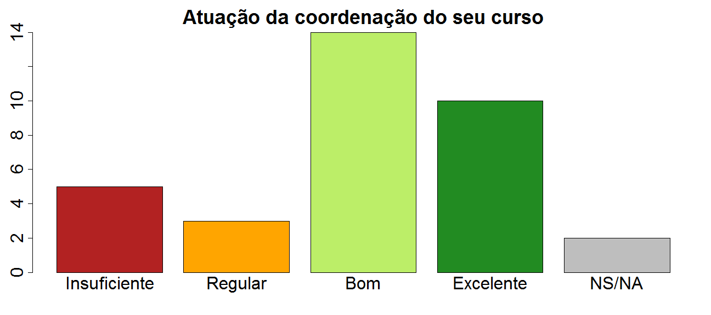
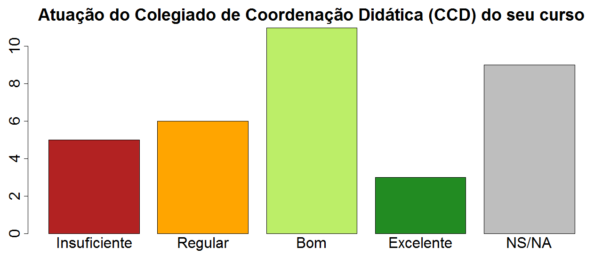
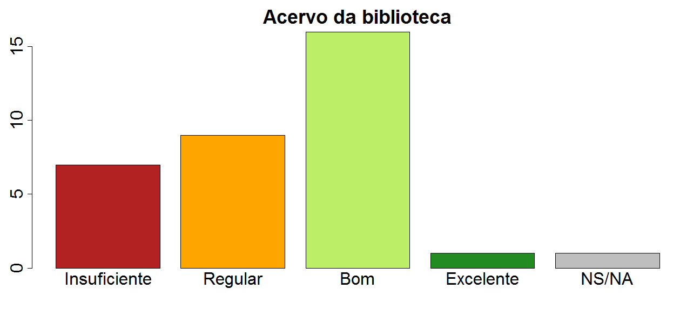
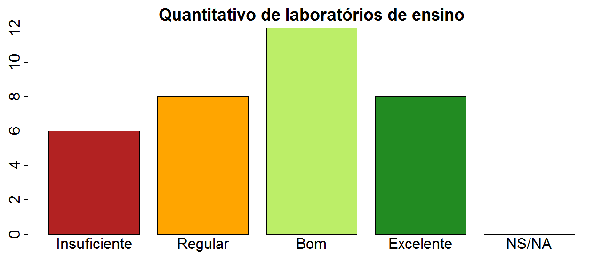
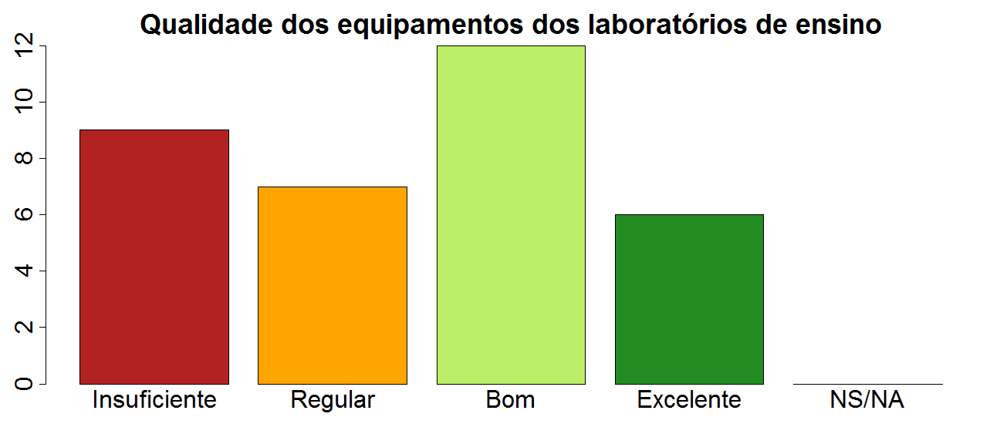

UAG-BACHARELADO EM CIÊNCIA DA COMPUTAÇÃO
Em 2018, a Comissão Propria de Avaliação (CPA) da Universidade Federal Rural de Pernambuco (UFRPE) realizou a autoavaliação institucional referente aos eixos Politicas de Gestão e Infraestrutura. Esta avaliação foi feita a partir de questionários online, disponibilizados de forma voluntária aos discentes, docentes e técnicos da instituição, no período 07 de maio a 05 de setembro de 2018. Maiores detalhes sobre a metodologia de autoavaliação podem ser encontrados no Relatório Geral.
Este relatório apresenta as respostas dos discentes, separadas por curso. Como docentes e técnicos não são vinculados a cursos, e sim a unidades, departamentos ou orgãos, as suas respostas não estão contempladas neste relatório de cursos.
Note que este relatório apresenta os resultados da avaliação da UFRPE como um todo sob o ponto de vista dos estudantes deste curso; sendo assim, não pode ser interpretado como uma avaliação do curso propriamente dito.
Este curso contava com 170 discentes aptos a participar desta avaliação, dos quais 34 (20%) responderam ao questionário. Foram utilizados os resultados absolutos de participação, sem análise estatística. Como a participação em alguns cursos foi baixa, essas respostas podem não representar a realidade, apresentando apenas um parâmetro de como os discentes avaliaram os eixos de Políticas de Gestão e Infraestrutura. De igual forma, os itens que se destacaram com maiores e menores médias de cada eixo são apresentadas de forma conjunta.
Do total das respostas obtidas para os itens dos dois eixos avaliados, 21.08% foram avaliados como “insuficiente”, 25.08% como “regular”, 29.49% como “bom”, 8.42% foram considerados “excelente”, e 15.93% responderam “não sabe/não se aplica”.
Lista das 5 perguntas com respostas mais positivas, com base na média ponderada das respostas dos discentes deste curso.
| Item | Média |
|---|---|
| Serviços de limpeza e jardinagem no campus | 7.5 |
| Horário de funcionamento da biblioteca | 7.0 |
| Quantitativo de servidores da biblioteca | 7.0 |
| Atuação da coordenação do seu curso | 6.9 |
| Infraestrutura dos auditórios | 6.7 |
Lista das 5 perguntas com respostas mais negativas, com base na média ponderada das respostas dos discentes deste curso.
| Item | Média |
|---|---|
| Restaurante Universitário (RU) | 0.0 |
| Conhecimento sobre o trabalho da PRPPG | 1.7 |
| Conhecimento sobre o trabalho da PRAE | 1.9 |
| Serviços de saúde (atendimentos médico, odontológico e psicológico) | 2.2 |
| Conhecimento sobre o trabalho da PREG | 2.9 |
Esta seção contém gráficos com os resultados da avaliação de 5 itens pré-selecionados: Atuação da Coordenação de Curso, Atuação do Colegiado de Coordenação Didática (CCD), Acervo da Biblioteca, Quantidade de Laboratórios de Ensino, e Qualidade dos Equipamentos de Laboratórios de Ensino. Note que em alguns cursos a utilização de laboratórios de ensino não é pertinente.

| Média | Item | Insuficiente (0) | Regular (5) | Bom (7.5) | Excelente (10) | NS/NA |
|---|---|---|---|---|---|---|
| 7.5 | Serviços de limpeza e jardinagem no campus | 0 | 6 | 21 | 6 | 1 |
| 7.0 | Horário de funcionamento da biblioteca | 1 | 9 | 17 | 5 | 2 |
| 7.0 | Quantitativo de servidores da biblioteca | 0 | 8 | 23 | 1 | 2 |
| 6.9 | Atuação da coordenação do seu curso | 5 | 3 | 14 | 10 | 2 |
| 6.7 | Infraestrutura dos auditórios | 2 | 8 | 20 | 3 | 1 |
| 6.5 | Infraestrutura das salas de aula | 2 | 12 | 16 | 4 | 0 |
| 6.2 | Acessibilidade física para pessoas com necessidades especiais | 3 | 12 | 11 | 5 | 3 |
| 6.2 | Quantitativo de laboratórios de ensino | 6 | 8 | 12 | 8 | 0 |
| 6.0 | Quantitativo de laboratórios de pesquisa | 4 | 7 | 13 | 3 | 7 |
| 5.8 | Conhecimento sobre o trabalho da PROGESTI | 6 | 9 | 10 | 6 | 3 |
| 5.7 | Atuação do Colegiado de Coordenação Didática (CCD) do seu curso | 5 | 6 | 11 | 3 | 9 |
| 5.7 | Sistema de Informações e Gestão Acadêmica (SIG@ UFRPE) | 3 | 18 | 11 | 2 | 0 |
| 5.6 | Qualidade dos equipamentos dos laboratórios de pesquisa | 4 | 11 | 10 | 2 | 7 |
| 5.5 | Infraestrutura das salas de audiovisual | 5 | 8 | 11 | 2 | 8 |
| 5.5 | Manutenção das instalações prediais | 5 | 12 | 13 | 2 | 2 |
| 5.4 | Instalações dos banheiros, copas e área de convívio | 8 | 8 | 13 | 4 | 1 |
| 5.4 | Qualidade dos equipamentos dos laboratórios de ensino | 9 | 7 | 12 | 6 | 0 |
| 5.3 | Acervo da biblioteca | 7 | 9 | 16 | 1 | 1 |
| 5.2 | Acesso à internet banda larga | 8 | 11 | 9 | 5 | 1 |
| 5.2 | Processos de consulta (eleição) para cargos de gestão (reitoria, departamentos, unidades acadêmicas e coordenações de curso) | 7 | 10 | 6 | 5 | 6 |
| 5.0 | Segurança do campus | 8 | 10 | 14 | 1 | 1 |
| 4.9 | Iluminação no campus | 8 | 12 | 13 | 1 | 0 |
| 4.8 | Acesso ao campus (transporte público) | 8 | 11 | 11 | 1 | 3 |
| 4.8 | Conhecimento sobre instruções normativas (estatuto da UFRPE, regimentos, resoluções) | 7 | 12 | 8 | 2 | 5 |
| 4.6 | Acesso à internet wireless | 10 | 12 | 10 | 2 | 0 |
| 4.3 | Infraestrutura da biblioteca (iluminação, climatização, acústica) | 10 | 13 | 9 | 1 | 1 |
| 4.2 | Conhecimento sobre atribuições do(a) Diretor(a) Geral da Unidade Acadêmica | 10 | 10 | 7 | 2 | 5 |
| 4.2 | Transparência na aplicação dos recursos orçamentários | 9 | 9 | 6 | 2 | 8 |
| 4.0 | Funcionamento do ônibus circular da UFRPE | 6 | 4 | 4 | 1 | 19 |
| 3.5 | Conhecimento sobre atribuições de Diretores de Departamento (campus dois irmãos) | 9 | 4 | 3 | 2 | 16 |
| 3.2 | Atuação do CONSU e CEPE | 8 | 3 | 3 | 1 | 19 |
| 2.9 | Conhecimento sobre o trabalho da PREG | 14 | 8 | 2 | 2 | 8 |
| 2.2 | Serviços de saúde (atendimentos médico, odontológico e psicológico) | 10 | 4 | 2 | 0 | 18 |
| 1.9 | Conhecimento sobre o trabalho da PRAE | 16 | 7 | 0 | 1 | 10 |
| 1.7 | Conhecimento sobre o trabalho da PRPPG | 16 | 6 | 0 | 1 | 11 |
| 0.0 | Restaurante Universitário (RU) | 19 | 0 | 0 | 0 | 15 |
NS/NA: Não sabe/não se aplica